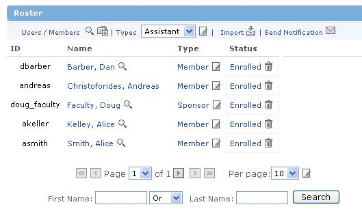
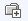

- displays the view for editing the role permissions for User Types within the current offering. This will modified the selected role type across the entire offering.
- displays the view for editing the role permissions for User Types within the current offering. This will modified the selected role type across the entire offering.The Roster Channel is a listing of the users enrolled in the current offering.

The default view shows a listing of users enrolled in the current offering. The listing is alphabetical in the order of last name, first name. Specific information may also be displayed for each user depending on the permissions of the user viewing the roster. If permissions exist, the roster may also display User ID, User Type, and User Status.
- displays the view for searching for a specific user to enroll in the offering and add to the roster.
- displays the view for editing the role permissions for User Types within the current offering. This will modified the selected role type across the entire offering.
Within the Roster Channel, the ability to import users into the offering is supported. The roster import file must contain the username and role for each user to be added to the offering.
- This view allows you to enter the file name for the roster to be imported.
From the main roster view, a user can select an enrolled user to:
 - displays the view showing details for the selected user. Details user-specific information like system identification, name, and email. Some user-specific details may only be viewed with the proper permissions.
- displays the view showing details for the selected user. Details user-specific information like system identification, name, and email. Some user-specific details may only be viewed with the proper permissions.
- displays the view for editing the role permissions of the selected user. Changes will be applied only to the selected user.
 - displays the view to unenroll the selected user from the offering and remove them from the roster.
- displays the view to unenroll the selected user from the offering and remove them from the roster.